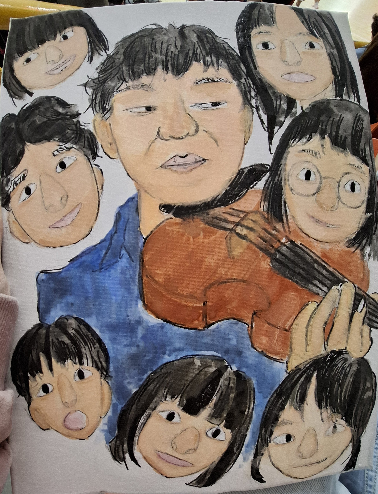
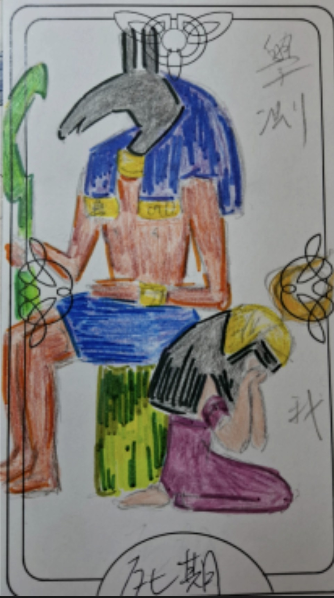
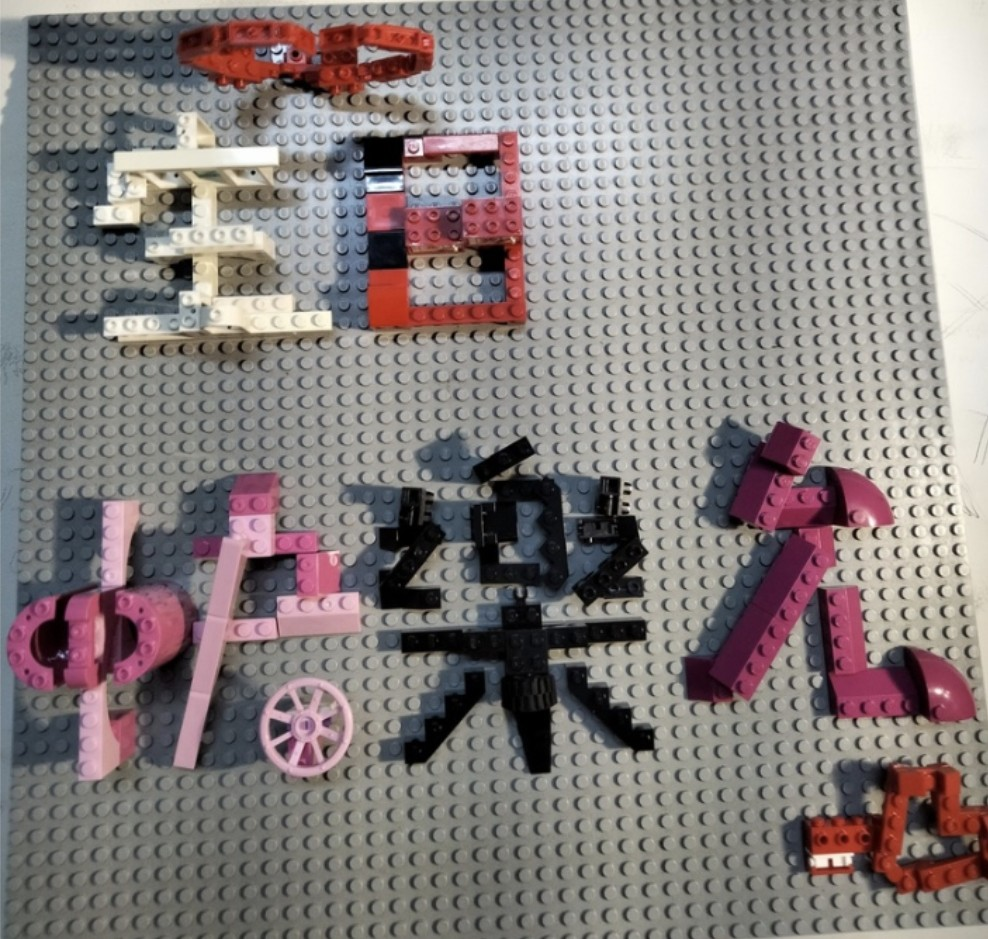

技能 (進度條)
在學經歷 (Experience)
國小 ：古亭國小
（102-108）- 活動比賽社團樣樣來，培養興趣
- 參與巧固球校隊和獨輪車社，學習團隊合作
- 將生活觀察與體驗融入美術創作，投入平面設計、四格漫畫
國中:螢橋國中
（108-111）- 國文朗讀、作文比賽，訓練台風與口條，大量閱讀課外書
- 參與榮譽服務隊，課餘之外找到自我價值
高中：景美女中
（111-114）- 很多活動都以小組為單位進行，培養社交技能，處理好人際關係才能合作愉快
- 參與黃衫撒野去，從郊山到百岳，跨出舒適圈，與環境共好、強身並培養毅力
- 加入旗隊、獲選班際合唱指揮，學習肢體、情感的表達
作品集 (Portfolio)

作品名稱 1：願我們能承接你的軟弱
使用媒材：簽字筆、水彩。作品描述：我們總把你想得很堅強，殊不知這個人設讓你必須在我們面前偽裝，然而我們都忘了，在我們看不到的地方，你也是那個和我們差不多大的孩子，你也有那不為人知的脆弱面，願畫上的我們可以代替我們陪伴著你。

作品名稱 2：情緒塔羅牌
使用媒材：色鉛筆、彩色筆。作品描述：學測時間迫在眉睫，我就像無助的祭品般，任人宰割。

作品名稱 3：樂高版生日卡片
使用媒材：樂高。作品描述：樂高並不只侷限於一張設計藍圖，離開那張小小的說明書，他還有更多可能。